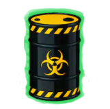

Mr. Pacman
- Tu misión es manejar a pacman hasta limpiar el plasma esparcido por todo el edificio.
- Haz uso de las flechas para controlar el movimiento de pacman.
- Evita los fantasmas 
- Come barriles  (o mascaras en el caso del nivel COVID-19 ) para obtener puntos extra
- Si estás en aprietos come fragmentos  (o jabones en el caso del nivel COVID-19)
(o jabones en el caso del nivel COVID-19)
esto te dará la habilidad de comer fantasmas.